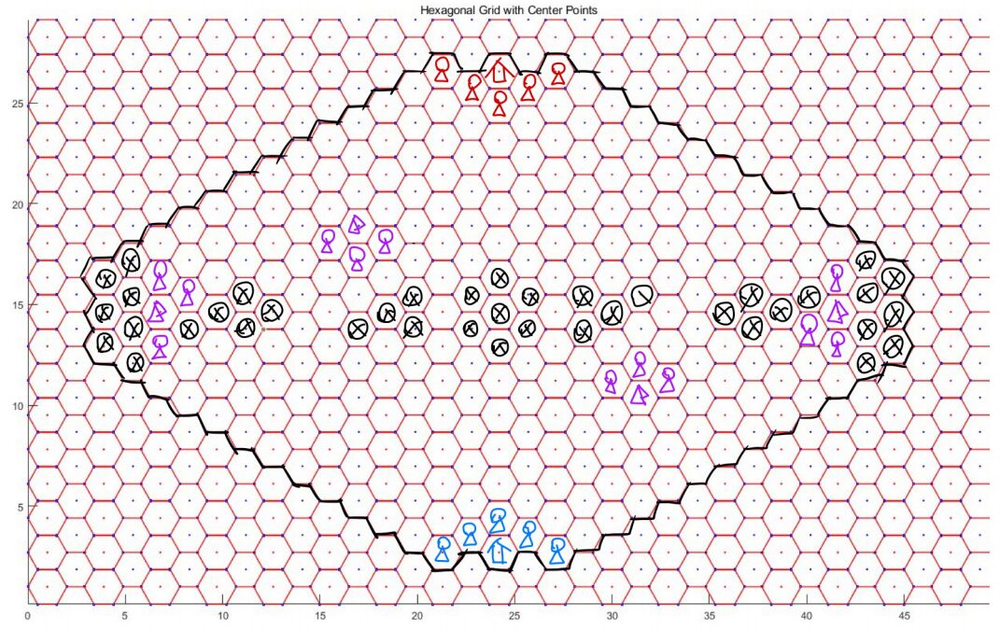
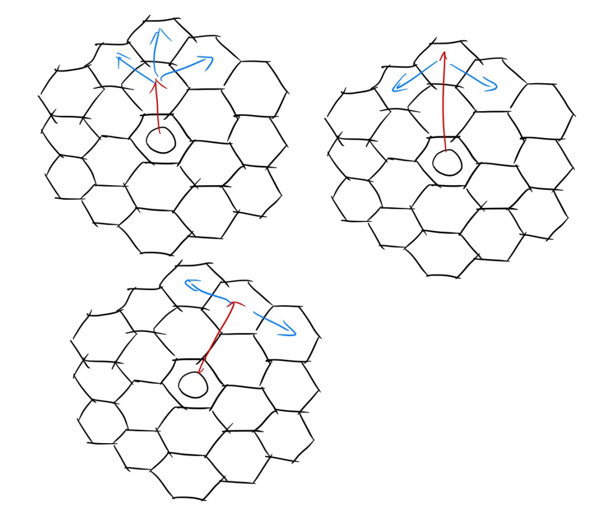

神迹之战
游戏介绍
神迹之战是一款同时为人类玩家和AI设计的,基于六边形地图的战棋游戏。具有丰富的策略性与趣味性。
地图介绍

要素 ：
-
地图中心对称，但不轴对称
-
双方 神迹 （红色与蓝色的房屋标志）在地图两侧，拥有5个 初始出兵点 （红色与蓝色的小人标志）
-
地图上有4处 驻扎点 （紫色帐篷标志），每个被 占领 的驻扎点提供 3 个 额外出兵点 （紫色小人标志）
-
被黑色 ⨂ 标记的格子为 深渊 ，深渊仅有 飞行生物 可以 经过 与 **停留
神迹
双方 神迹 具有 30 生命上限，不会恢复
-
神迹不属于 生物
-
神迹生命值率先降至 0 及以下的一方落败
驻扎点
驻扎点 默认为中立。
每个回合开始，当一名 地面生物 位于一个 驻扎点 上方时，该 驻扎点 被 该生物所属的一方占领。
驻扎点 被 另一方占领 前， 驻扎点 的占领状态不会因为（用于占领的生物离开等）任何因素而改变。
被己方占领的 驻扎点 周围的 出兵点 视为 己方出兵点 （额外出兵点） 。
即现在，你不再需要一个生物驻守在驻扎点以维持占领状态了。但是与此同时，驻扎点被对手窃取所带来的后果将更加严重。
不要忘了边角位的驻扎点，现在，利用空闲的生物占据边角位可能带来更大的优势
出兵点
初始出兵点 和 额外出兵点 统称 出兵点 。
每回合都可以在 己方出兵点 召唤生物，如果某个召唤行为会导致 生物重叠 ，则不能进行召唤。
- 一个 己方出兵点 上如果有一个 地面生物 （无论敌我），则你不可以在此召唤 地面生物 ，但你可以在此召唤 飞行生物 。反之亦然。
深渊
深渊 是一种特殊地形。
地面生物 无法 经过 或 停留 在 深渊 中~~（，如果 地面单位 被 强制位移 并停留至 深渊 则立即死亡（但 穿过不会））【暂无强制位移机制】~~。
飞行生物 可以自由 经过 和 停留 在 深渊 中。
基本机制
游戏流程
确定先后手
随机确定先后手，并告知双方玩家
提交卡组
双方玩家提交自己的卡组，卡组包含 1 种 神器 和 3 种不同 生物
实际上由于不存在抽卡，可以理解为这些卡一开始就全在手牌里
不合法的卡组直接判负。
对局开始
公布双方卡组 。
进入 先手玩家 的回合，之后轮流进行回合。
法力值
游戏开始时， 先手玩家 拥有 1 法力上限 ， 后手玩家 拥有 2 法力上限。
回合开始时：
-
先手玩家的奇数回合，即总第 4k+1 回合， 法力上限 增大 1 ；后手玩家的偶数回合，即总第 4k 回合， 法力上限 增大 1
-
当前玩家 法力值 设置为 法力上限
实际上，先手玩家的第一个回合也会增长法力上限，所以实际上双方玩家前几个回合的法力上限如下表：
回合数 1 2 3 4 5 6 7 8 先后手 先 后 先 后 先 后 先 后 法力上限 2 2 2 3 3 3 3 4 先手在自己的第21回合，总的第41回合到达12法力上限；后手在自己的第20回合，即总的第40回合到达12法力上限。
召唤生物、使用神器都会消耗法力值。
法力上限 最高为 12
冷却
生物
每种生物在加入卡组后会提供若干张 生物单元 。
生物单元的数量由生物种类决定，如：将剑士编入卡组将获得6张剑士生物单元，而将弓箭手编入卡组将获得3张弓箭手生物单元
每张 生物单元 可以被 独立地 消耗，用于一次任意 星级 的该种生物召唤。
召唤出的 生物 死亡 后，召唤其所消耗的 生物单元 会进入 冷却 ， 冷却结束后才能再次用于召唤。
冷却所需回合数与生物 种类 和 星级 有关。
在全局第51回合（先手回合）和第76回合（后手回合），双方生物单元数量会得到补充。
在生物介绍中，将用 初始/51回合/76回合 的格式描述各次变化后的生物单元数量
神器
神器-回收 后进入冷却，冷却结束后可再次使用。
神器-回收 的相关描述参见 神器 条目
回收 时机和 冷却时间 与神器有关。
玩家回合
双方玩家轮流进入 回合 ，每个回合分为以下阶段：
回合开始
按顺序处理以下事件：
-
当前玩家 法力上限 按规则增大 0 or 1
-
当前玩家 法力值 设置为 法力上限
-
当前玩家占领 驻扎点
-
处理描述带有 回合开始 的效果
冷却阶段
己方 生物单元 和 神器 剩余冷却时间 减少 1 。
剩余冷却时间 为 0 的 生物单元 和 神器 变为可用。
主要阶段
在该阶段，玩家可以任意进行以下操作：
-
召唤生物
-
生物-移动
-
生物-攻击
-
神器-使用
回合结束
处理描述带有 回合结束 的效果
胜利判定
满足如下条件时，游戏结束：
-
一方AI回合超时
-
一方神迹血量小于等于0
-
双方完成的回合总数到达 100
依次按照以下规则判定胜者：
-
回合超时的AI判负，其对手获胜
-
如果没有AI超时，神迹剩余血量更多的一方获胜
-
如果神迹剩余血量相同，计算所有阵亡的己方生物的 星级 之和，阵亡己方生物星级和较小的一方获胜
生物
生物单元
每张 生物单元 可以被 独立地 消耗，用于一次任意 星级 的该种生物召唤。
召唤出的 生物 死亡 后，召唤其所消耗的 生物单元 会进入 冷却 ， 冷却结束后才能再次用于召唤。
冷却所需回合数与生物 种类 和 星级 有关。
在全局第51回合（先手回合）和第76回合（后手回合），双方生物单元数量会得到补充。
星级
生物 拥有 3 个 星级 不同的版本，不同 星级 的生物拥有相似的定位和特性，但往往具有不同的 基本属性 。
生物单元 可以用于任意 星级 的该种生物召唤。
基本属性
生物拥有6种 基本属性 —— 法力消耗 、 攻击力 、 攻击距离 、 最大生命值 、 最大行动力 、 冷却时间 。
法力消耗
生物 召唤 时会消耗等同于 法力消耗 的 法力值 。
攻击力
决定生物 攻击 和 反击 造成的 伤害
攻击距离
决定生物攻击的范围。在棋盘中，两个格子的 直线距离 定义为从一个格子走到另一个格子，无视地形
和生物所需要的最少步数。而 攻击距离X-Y 意为该生物能攻击到与其所在格 直线距离 在 X-Y 范围内的格子上的生物。
飞行生物 的 攻击范围 包括 空中层 和 地面层 ， 地面生物 的 攻击范围 包含 地面层 ， 如果有 对空 属性，则还包含 空中层 。
最大生命值
生物 生命值 的最大值， 生物-召唤 后， 初始生命值 等于 最大生命值 。
受到 治疗 后，生命值不会超过最大生命值。
最大行动力
生物-移动 时，一条 合法移动路径 的最大格数。
地面生物 计算 合法路径 时，不能 经过 或 停留 于 其他地面生物 、神迹 、 深渊 ；不能 经过 但能 停留 于 敌方飞行生物 、 敌方地面生物周围1格 。
飞行生物 计算 合法路径 时，不能 经过 或 停留 于 其他飞行生物 ；不能 经过 但能 停留 于 敌方地面生物 、 敌方飞行生物周围1格 。
路径 的格子不包含移动前的位置。
停留 的格子即路径的最后一格。
经过 的格子不包含最后停留的格子。
另一种描述方式：
每个生物 占据 某一格的某一层，这使得双方生物都不能经过/停留于该格该层。同时，每个生物 拦截 同层的周围6格和同格的另一层，这使得 敌方生物 不得经过这些区域，一旦走入就必须停止移动。
提示：间断（生物之间间隔1格）防线能很好地阻击敌方同层生物，同时减少需要用到的生物数量和增大攻击面积。但对于非同层生物仅能起到有限的拖延作用。
冷却时间
指 生物-死亡 后，对应 生物单元 重新可用前，需要经历的 冷却阶段 数。
相关操作
召唤
消耗 法力值 和 对应生物单元 ，在指定位置，召唤一个指定 种类 和 星级 的生物。
如无特殊 词条 ，生物 召唤 出来的当回合不能 攻击 或 移动 。
攻击
让一个处于 可攻击状态 的 生物（攻击者） 对攻击范围内 敌方生物/神迹（被攻击者） 发起一次攻击，
造成等同于 攻击者 攻击力 的伤害。
如果 攻击者 同时也在 被攻击者 的攻击范围内， 被攻击者 会对 攻击者 进行 反击 ，造成等同于 被攻击者 攻击力 的伤害。
攻击力 为 0 的生物不可 攻击 。
如无特殊 词条 ，一个生物在一个回合内不可以既 移动 ，又 攻击 。
移动
让一个处于 可移动状态 的 生物 移动到指定地点。
移动时的 占据 与 拦截 的相关概念，参见 最大行动力 一条。
死亡
如果玩家的一次指令所引发的事件全部处理完毕后，进行一次 死亡检索 ，如果存在场上生物 生命值 降至 0 或更低，则这样的生物会进入 濒死状态 。这些 濒死 生物会依次进入 死亡结算 ——他们的 亡语 会被触发，接着模型被删除，召唤他们所用的 生物单元 会进入冷却。
生物一旦进入 濒死状态 ，即使因为其他生物的 亡语 ，生命恢复到 0 以上，也一样会进行 死亡结算。
当所有 濒死 生物 死亡结算 完成后，进行一轮新的 死亡检索 ，直到不再有生物生命值为 0 或更低。
词条
长词条
触发
达成某种条件时，触发某种效果
光环
对一定范围内满足条件的生物产生持续效果
亡语
死亡时生效的触发效果
短词条
对空
仅 地面生物 可能有本词条
可攻击 攻击范围 内的 地面生物 和飞行生物
飞行
是 飞行生物 ，可攻击 攻击范围 内的 地面生物 和飞行生物
圣盾
抵消受到的第一次伤害，不可叠加
神器
基本属性
神器拥有基本属性： 法力消耗 、 冷却时间 、 使用方式 。
法力消耗
使用 神器时需要消耗的 法力值 。
冷却时间
神器 回收 后直到变为 可用 所需经历的 回合数。
回收 时机由使用方式决定。
使用方式
神器有3种使用方式，每个神器的使用方式是固定的。
释放
可以理解为魔法卡，当即使用，产生效果，立即 回收
生成
当即使用，产生效果（可能没有即时效果）。
产生效果之后，会在目标地点生成一个 神器生物 ，被看作 生物。
神器生物 死亡后， 神器 才 回收 。
装备
以 友方生物 为目标使用，使用后为目标生物增加 属性 和 词条
装备神器的生物死亡后， 神器回收
卡牌一览
生物
以下用 初始/51回合/76回合 的格式描述各次变化后的生物单元数量
费用/攻击/生命/最小范围-最大范围/行动力/冷却
剑士
- 生物单元数量：6/7/8
L1
- 2/2/2/1-1/3/2
L2
- 4/4/4/1-1/3/2
L3
- 6/6/6/1-1/3/3
弓箭手
- 生物单元数量： 3/4/5
L1
-
2/1/2/3-4/3/4
-
对空
L2
-
4/2/3/3-4/3/4
-
对空
L3
-
6/3/4/3-4/3/4
-
对空
黑蝙蝠
- 生物单元数量：3/4/5
L1
-
2/1/1/0-1/4/3
-
飞行
L2
-
3/2/1/0-1/4/3
-
飞行
L3
-
5/4/2/0-1/5/4
-
飞行
牧师
- 生物单元数量：3/4/4
L1
-
2/0/3/0-1/5/3
-
触发 ： 己方回合结束 时，(范围2) 友方生物 回复 1 生命
-
光环 ： (范围2) 其他友方生物 +1 攻击力
L2
-
4/0/4/0-1/5/3
-
触发 ： 己方回合结束 时，(范围3) 友方生物 回复 1 生命
-
光环 ： (范围3) 其他友方生物 +1 攻击力
L3
-
7/0/6/0-2/5/5
-
触发 ： 己方回合结束 时，(范围3) 友方生物 回复 1 生命
-
光环 ： (范围3) 其他友方生物 +1 攻击力
注意： 攻击力 为 0 的生物不可 攻击 。
虽然牧师攻击力仍然为0，但当多个牧师彼此靠近时，他们将有一定的近战和对空反制能力，必要时可以进行少量输出
回复生命效果对自身起作用，加攻击力效果对自身不起作用
如果范围内有其他牧师，加攻击力会对其他牧师起作用
火山之龙
- 生物单元数量： 3/4/5
L1
-
5/3/5/1-2/2/5
-
触发 ：攻击 敌方地面生物 后，对 （与目标距离1） 且 （与自身距离2） 的 敌方地面生物 造成 3 点伤害
L2
-
7/4/7/1-2/2/5
-
触发 ：攻击 敌方地面生物 后，对 （与目标距离1） 且 （与自身距离2） 的 敌方地面生物 造成 4 点伤害
L3
-
9/5/9/1-2/2/5
-
触发 ：攻击 敌方地面生物 后，对 （与目标距离1） 且 （与自身距离2） 的 敌方地面生物 造成 5 点伤害
相当于锥形攻击（攻击距离2目标不会溅射距离1目标），溅射伤害不享受攻击力加成
如下图，红色箭头为选取的目标，蓝色箭头为溅射到的位置
选择距离为2的目标时，距离为1的生物并不会被溅射

冰霜之龙
- 生物单元数量： 3/4/5
L1
-
5/3/4/0-2/2/4
-
对空
L2
-
7/4/6/0-2/2/4
-
对空
L3
-
9/5/8/0-2/2/5
-
对空
神器
法力值/冷却
塞瓦哈拉的圣光之耀
-
6/5
-
释放：任意位置（包括 深渊 ）
-
回复 (目标地点 范围2) 友方生物 生命值至生命上限，(目标地点 范围2) 友方生物 直到下下个回合开始 获得 +2 攻击。
洛古萨斯的地狱之火
-
8/6
-
生成 ： (神迹范围7 或 占领驻扎点范围5) 且 无地面生物 且 非深渊 的位置
-
召唤物-地狱火 ：
-
8/12/0-1/3
-
对空
-
使用时对 (目标范围2) 内 敌方生物 造成 2 伤害，然后 生成 一个 召唤物-地狱火
马尔瑞恩的阳炎之盾
-
6/4
-
装备：友方生物
-
+0/+3
-
圣盾（抵消受到的第一次伤害，不可叠加）
-
触发 ： 己方回合开始 时，获得 圣盾
塞浦洛斯的风神之佑
-
8/12
-
释放：任意地点（包括 深渊 ）
-
重置 (目标地点 范围1) 友方生物 行动次数。
即目标范围内的友方生物，无论本回合是否行动过，无论是否为本回合新召唤的生物，都可以立即行动一次。对行动过的生物使用即可达到双倍行动的效果。
特别注意：对未行动过的生物使用并不能使其行动两次！